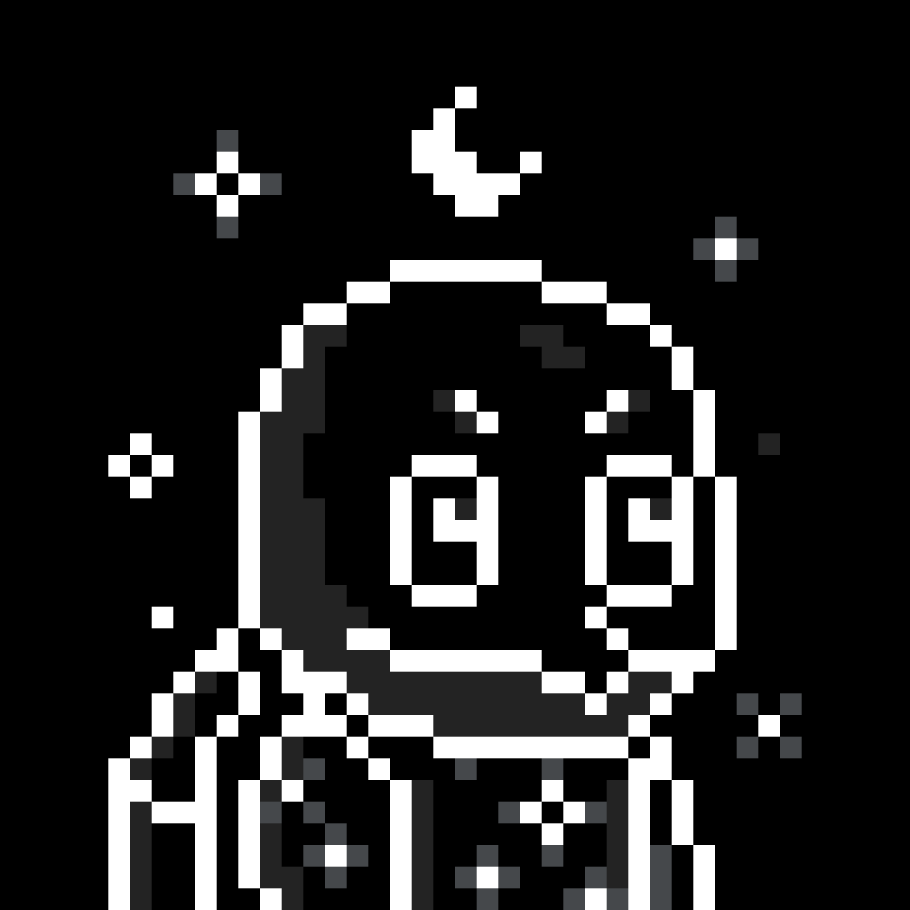
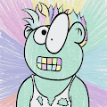
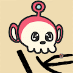
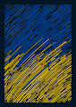
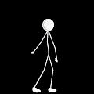
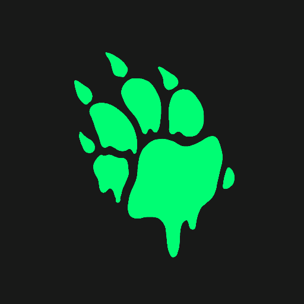
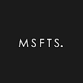
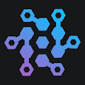
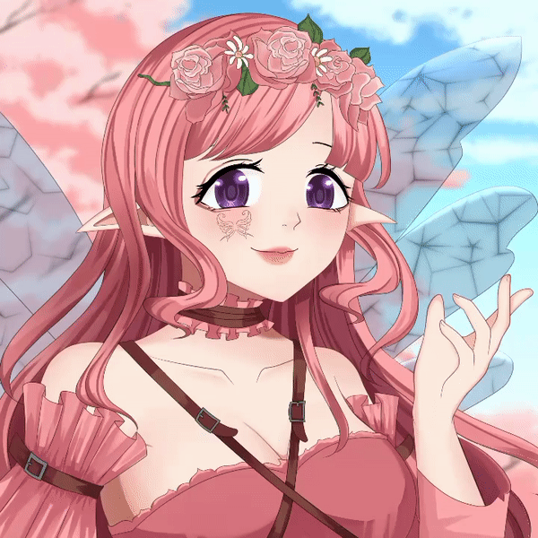
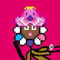

Minting Now PASS Minting Now PASS NFT - 常见问题（FAQ） ▶ 什么是 Minting Now PASS？ Minting Now PASS 是一个 NFT（Non-fungible token）集合。存储在区块链上的数字艺术品集
MintMoney Airdrop MintMoney 空投统计 创建于 8 个月前 500 代币供应 5% 费用 过去 7 天没有售出 MintMoney Airdrop。 MintMoney 免费空投，500 NFT 有机会赢取高达 44 MATIC 的奖品 MintMoney 空投 NFT - 常见问题（F
MintoniansOfficial 释放明顿人！ Mintyverse 正在扩张！进入明顿人。Mintonians 是一个全新的集合，包含 10,000 个独特设计的角色，随时准备为您的 NFT 收藏添加一点点薄荷味。要获
Mirror Editions V4 镜像版是创作者以固定价格铸造有限供应的相同 NFT 的一种方式。如果 1/1 NFT 是苏富比的毕加索，那么版本就像发布的数千个第一版全息喷火龙。 Mirror Editions V4 NFT - 常见问
Mirror Passes 这是错误的合同。使用此处找到的 v2 集合 Mirror Pass NFT - 常见问题（FAQ） ▶ 什么是镜子通行证？ Mirror Passes 是一个 NFT（不可替代代币）集合。存储在区块链上的数字
Mirror Passes V2 每次通行证都可以独家访问从 Web3 空间中获得的最昂贵的知识。 我们通过以可承受的价格拆除任意墙来弥合鲸鱼和普通投资者之间的差距。 Mirror Pass V2 NFT - 常见问题（
MirrorBirds MirrorBirds NFT - 常见问题（FAQ） ▶ 什么是 MirrorBirds？ MirrorBirds 是一个 NFT（非同质代币）集合。存储在区块链上的数字艺术品集合。 ▶ MirrorBirds 代币有多少？ 总
MirrorMirror Pass MirrorMirror Pass NFT - 常见问题（FAQ） ▶ 什么是Mirror Mirror Pass？ MirrorMirror Pass 是一个 NFT（Non-fungible token）集合。存储在区块链上的数字艺
Mirs of Space Mirs Of Space (MOS) 是 6969 件讽刺艺术作品，旨在定性地描绘和记录 Crypto 和 NFT 空间的丰富文化和历史以及其中不同类别的实体。每个资产都传递一条消息。每项资产都让您可以
Misfit Pandas Misfit Pandas 统计数据我们是熊猫，我们来这里是为了吃掉 Metaverse mmm nomnomnom 中的所有竹子。社区运行 cc0 项目。拥有你的 NFT，拥有你的知识产权。 Misfit Pandas NFT - 常见问题（FAQ）
Miso Cult Genesis Miso Cult Genesis NFT - 常见问题（FAQ） ▶什么是味o邪教的创世纪？ Miso Cult Genesis是NFT（无杀伤令）的收藏。存储在区块链上的数字艺术品集合。 ▶存在多
MISS AL SIMPSON 辛普森小姐统计 创建于近 3 年前 374 代币供应 OpenSea 验证集合 10% 费用 过去 7 天没有售出 MISS AL SIMPSON。 数字画家 | 数字流行艺术家 | 加密艺术家 MISS AL SIMPSON NFT - 常见
MissCryptoClub Miss Crypto 是一个有个性的 NFT 女性化身！3D Vox 合集，1 位 OG Miss = 1 位免费领取3D。OG MCC 系列有 3144 位 Miss Crypto，个性各异，穿着时尚。它们作为 ERC-721 令牌存在
MissUniversePh 2021 年菲律宾环球小姐 NFT 系列是一套虚拟的 NFT 收藏品，展示了 2021 年菲律宾环球小姐候选人的 RFOX 运动服、民族服装、头像和泳装。 成为第一个在以太坊区块链上获得
MISTER GRAY Gray 先生是 5000 个 NFT 的集合，其灵感来自古老而著名的动画电影和漫画书风格，将复古艺术与新的 Web 3 技术与最新的 ERC 721A 优化智能合约和 Opnesea 上的即时展示相结合！ 在
MITO Gallery MITO 是一个跨学科的 NFT 艺术画廊。我们专注于西班牙和拉丁艺术家发布有限且具有收藏价值的艺术品。 MITO Gallery NFT - 常见问题（FAQ） ▶ 什么是美图画廊？ MITO Gallery 是一
MIU DAO MIU DAO NFT - 常见问题（FAQ） ▶ 什么是 MIU DAO？ MIU DAO 是一个 NFT (Non-fungible token) 集合。存储在区块链上的数字艺术品集合。 ▶ 有多少个 MIU DAO 代币？ 总共有 334 个 MIU DAO NFT。
Mizuki Daydreams 由 AI 生成并被困在以太坊区块链上的 888 个灵魂。你会想出如何释放我们的灵魂来揭示我们的真实形态吗？ Mizuki Daydreams NFT - 常见问题（FAQ） ▶ 什么是水木白日梦？ Mizuki
 MoonTurtlez.wtf ▶ 什么是 Moonturtlez？ Moonturtlez 是一个 NFT（不可替代令牌）集合。存储在区块链上的数字艺术品集合。 ▶ 有多少个 Moonturtlez 代币？ 总共有 8,888 个 Moonturtlez NFT。目
MoonWalkers - EDITION SPECIAL 世界著名的 3D 艺术家，在主要平台上拥有超过 10 万粉丝，Liam Pannier 被广泛认为是其艺术形式的领先专家。他专注于杰出的太空艺术品，每件在世界各地的售价
Moonwolf.io X Mark Cuban X Polygon Moonwolf 是 Matic / Polygon 上的第一个通缩代币。每笔交易都会减少和重新分配总供应量。质押许多代币以获得更多奖励，赚取MOON代币并在每个月用它来换取我们商店中
Moosehead Union Moosehead Union 是以太坊区块链上算法和随机生成的 NFT 的集合。在超过 500 万亿（5 个有 17 个零）可能的 Mooseheads 中，只有 10,000 个独特的 Mooseheads！Moosehead
 More Than Degen 创建于 3 个月前 5,000 代币供应 0% 费用 刷新 过去 7 天没有超过 Degen 的销量。 Th3y 称我们为 degens，但我们是 m0re！我们是 shcollectors 和 trad3rs。我们 shlove Web3 和 p
 Morie MFers Morie MFers 统计 创建于 6 个月前 1,590 代币供应 5% 费用 过去 7 天没有出售 Morie MFers。 6,969 名 Morie MFers 的灵感来自（不隶属于）Sartoshi 和 CryptoMories
 Morpheu5 Series Morpheu5 系列 NFT - 常见问题（FAQ） ▶ 什么是 Morpheu5 系列？ Morpheu5 系列是一个 NFT（非同质代币）集合。存储在区块链上的数字艺术品集合。 ▶ Morpheu5 系列代币有多少？ 总共有
Morphys Morphys 是 10k 个独特的 1920 年代卡通人物，可以在链上改变他们的外观和特征。当新赛季开始时，所有者可以决定他的 Morphy 是否会变形为新的赛季外观。变形改变了它的外
Mr. Spencer Spencer NFT 先生 - 常见问题（FAQ） ▶ 什么是斯宾塞先生？ Spencer 先生是一个 NFT（不可替代代币）集合。存储在区块链上的数字艺术品集合。 ▶ 斯宾塞先生代币有多
MRST Mining PET Cube 挖掘 PET NFT 我们很高兴介绍我们的第二个 NFT 项目 The Mars。 MRST Mining Pets NFT 旨在为 MRST Mining App 中的采矿活动提供更高的生产力。 它是世界上第一个用于加密挖掘应用的实用
 MrStick MrStick NFT - 常见问题（FAQ） ▶ 什么是 MrStick？ MrStick 是一个 NFT（非同质代币）集合。存储在区块链上的数字艺术品集合。 ▶ 有多少个 MrStick 代币？ 总共有 2,014
 MSC Antidote MSC Antidote NFT - 常见问题（FAQ） ▶ 什么是 MSC 解毒剂？ MSC Antidote 是一个 NFT（不可替代令牌）集合。存储在区块链上的数字艺术品集合。 ▶ 有多少个 MSC Antidote 代币？ 总共有
MSCMetaverse VR Ticket 活出元宇宙的自由MSC元界；它是一个由 3D 交互模型组成的虚拟世界，配备了许多艺术品、历史建筑、科学展览、教育工作坊、旅游景点和游乐园。获取 Ticket-NFT 免
msft on Sound.xyz 关于 Sound.xyz 统计信息的 msft 创建于 5 个月前 25代币供应 10% 费用 过去 7 天内在 Sound.xyz 上没有任何 msft 销售。 由 msft 在 Sound 上创建。对这首歌发表评论 所有收藏者都可以访问我的 Discord
 MSFTS MSFTS 统计数据 创建于大约 1 年前 16 代币供应 5% 费用 过去 7 天内没有出售任何 MSFTS。 Arq 的佣金和定制件,▶ 什么是 MSFTS？ MSFTS 是一个 NFT（不可替代令
MTE crazy alien Crazy Alien NFT 是 5000 Crazy Alien 的衍生集合。这些疯狂的外星人生活在 Web3.0 元界世界。每一个 Crazy Alien NFT 都是独一无二的，是未来加入 Universe Game 的关键。 Crazy Alien 是 MTE 中仅有的提供广泛实用程
Muffin Mafia 认识松饼黑手党 我们的菜单包含一组独特的 10,000 个 Muffin Mafia NFT，新鲜出炉并在 OpenSea 上推出。 当你拥有它的 NFT 时，咬一口松饼黑手党。所有权包括您的 NFT 的商业权利以
Muki NFT Muki NFT 统计 创建于 3 个月前 6,666 代币供应 10% 费用 过去 7 天内没有出售 Muki NFT。 Muki 是生活在以太坊区块链上的 6666 个多样化、美丽和独特的 NFT 的集合。 每个钱包免费领
Multicoin Capital Multicoin Capital 是一家以论文为导向的投资公司，投资于重塑万亿美元市场的加密货币、代币和区块链公司。我们管理着对冲基金和风险基金，在公共和私人市场进行投资
 MultiNode 什么是多链资本？ Multi-Chain Capital 为 DeFi 用户提供了一种从 Yield Farming 收益中受益的简单方式。通过在桥接、农业和投资方面进行繁重的工作，MCC 将第 1 层和第 2 层链（Fan
 Multiverse Travelers Official 6,666 个动漫艺术头像的集合，基于多元宇宙的独特故事，由被称为多元宇宙旅行者的超自然生物启用。 该项目专注于构建一个社交网络应用程序，允许用户使用拥
MunchiesNFT Collection 5,000 种流行艺术菜肴的独特收藏 以 70 位传奇艺术家为灵感的实用工具。 在纽约时代广场和萨奇艺术画廊的其他艺术博览会上展出。MunchiesNFT 将传统
 Murakami Mfers V2 前 3500 免费！ 之后每个 0.0069 20 个交易限制 murakami mfers 完全由 Murakami King 的手绘生成。该项目属于公共领域；随意使用 murakami mfers 以任何你想要的方式。▶ 什么是村上 Mfers V2？ Murakami Mfers V2 是一
Murakami.Flowers Official Murakami.Flowers 是艺术家村上隆的代表作品——花卉，以点状艺术的形式表现出来，让人想起 1970 年代创作的日本电视游戏。 该作品正在以数字108为关键词进行开发； 10


 是 6969 件讽刺艺术作品")


 集合。")